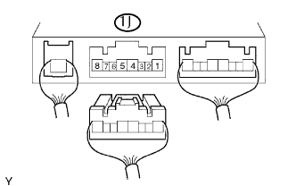

HỆ THỐNG SFI > Mạch Nguồn ECU |
| 1.KIỂM TRA ECM (ĐIỆN ÁP +B) |
Bật khoá điện ON.
Đo điện áp của các giắc nối ECM.
| Nối dụng cụ đo | Điều kiện tiêu chuẩn |
| E9-1 (+B) - E12-3 (E1) | 9 đến 14 V |
|
| ||||
| NG | |
| 2.KIỂM TRA DÂY ĐIỆN (ECM - MÁT THÂN XE) |
Ngắt giắc nối E12 của ECM.
Đo điện trở giữa của giắc nối phía dây điện.
| Nối dụng cụ đo | Điều kiện tiêu chuẩn |
| E12-3 (E1) - Mát thân xe | Dưới 1 Ω |
|
| ||||
| OK | |
| 3.KIỂM TRA ECM (ĐIỆN ÁP IGSW) |
Bật khoá điện ON.
Đo điện áp của các giắc nối ECM.
| Nối dụng cụ đo | Điều kiện tiêu chuẩn |
| E9-9 (IGSW) - E12-3 (E1) | 9 đến 14 V |
|
| ||||
| NG | |
| 4.KIỂM TRA CẦU CHÌ (IGN) |
Tháo cầu chì IGN ra khỏi hộp rơle và cầu chì bảng táplô.
Đo điện trở giữa của cầu chì.
|
| ||||
| OK | |
| 5.KIỂM TRA CỤM KHOÁ ĐIỆN |
Ngắt giắc nối I9 của khóa điện.
Đo điện trở của công tắc.
| Nối dụng cụ đo | Tình trạng công tắc | Điều kiện tiêu chuẩn |
| 5 (AM2) - 6 (IG2) | KHÓA | 10 kΩ trở lên |
| 5 (AM2) - 6 (IG2) | ON | Dưới 1 Ω |
|
| ||||
| OK | ||
| ||
| 6.KIỂM TRA ECM (ĐIỆN ÁP MREL) |
Bật khoá điện ON.
Đo điện áp của các giắc nối ECM.
| Nối dụng cụ đo | Điều kiện tiêu chuẩn |
| E9-8 (MREL) - E12-3 (E1) | 9 đến 14 V |
|
| ||||
| OK | |
| 7.KIỂM TRA CẦU CHÌ (EFI) |
 |
Tháo cầu chì EFI ra khỏi hộp rơle và cầu chì khoang động cơ.
Đo điện trở giữa của cầu chì.
|
| ||||
| OK | |
| 8.KIỂM TRA RƠLE TỔ HỢP (RƠ LE MAIN) |
|  |
Ngắt giắc rơle tổ hợp 1J ra khỏi hộp đầu nối khoang động cơ (Xem trang Kích chuột vào đây).
Đo điện áp của rơle MAIN.
| Nối dụng cụ đo | Điều kiện | Điều kiện tiêu chuẩn |
| 1J-4 - Mát thân xe | Khoá điện ON | 10 đến 14 V |
|
| ||||
| OK | |
| 9.KIỂM TRA DÂY ĐIỆN (RƠLE TÍCH HỢP (RƠLE MAIN) - ECM, MÁT THÂN XE) |
Ngắt giắc rơle tổ hợp 1J ra khỏi hộp đầu nối khoang động cơ (Xem trang Kích chuột vào đây).
Ngắt giắc nối E9 của ECM.
Đo điện trở của các giắc nối phía dây điện.
| Nối dụng cụ đo | Điều kiện tiêu chuẩn |
| 1J-2 - E9-8 (MREL) | Dưới 1 Ω |
| 1J-4 - E9-1 (+B) | Dưới 1 Ω |
| 1J-3 - Mát thân xe | Dưới 1 Ω |
| 1J-2 hay E9-8 (MREL) - Mát thân xe | 10 kΩ trở lên |
| 1J-4 hay E9-1 (+B) - Mát thân xe | 10 kΩ trở lên |
|
| ||||
| OK | ||
| ||